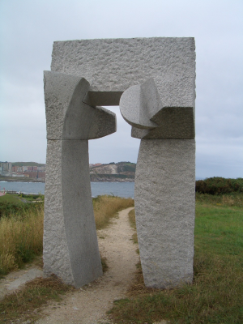
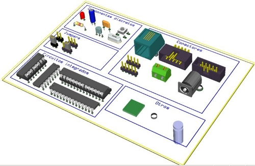

Hemos publicado la versión 1.0 de Monolito, una biblioteca de componentes para Kicad. Esta versión incluye todos los componentes de la Skypic 2009, que ya han sido validados en fabricación.
Mi motivación personal es la de fomentar el que se realicen diseños de hardware libre2 para fabricación industrial. Por eso, Monolito sólo contendrá componentes que ya han sido validados en fabricación. La primera versión de Monolito se creó en el 2005, para la realización de la tarjeta Freeleds. Ahora se ha ampliado con los componentes de la Skypic y pronto con los de la Skycube.

Actualización: Ya está liberada la versión 1.1, que incluye los componentes de la Skycube